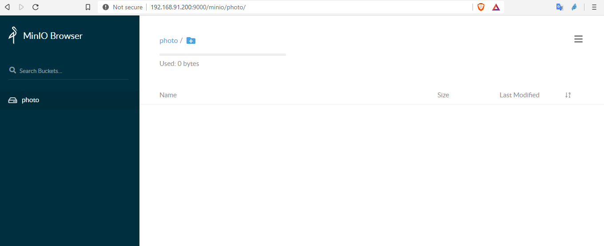

Minio
Minio is a self-hosted AWS S3-compatible, object storage server written in Go. It can be used to store objects such as photos, videos, log files, backups, etc.
Objects are discrete units of data that are stored in a structurally flat data environment. There are no folders, directories, or complex hierarchies as in a file-based system. Each object is a simple, self-contained repository that includes the data, metadata (descriptive information associated with an object), and a unique identifying ID number (instead of a file name and file path). This information enables an application to locate and access the object. They are beneficial because of Cloud compactible, Scalable, Storing unstructured data, Customizable metadata.
In this example, we’ll install Minio and will configure it to run as a systemd service.
server : 192.168.91.200
minio service port : 9000
user/accessKey : prateek
policy : all_permission assgined to prateek
storage : /data
- Download minio and move it to /usr/local/bin/
wget https://dl.min.io/server/minio/release/linux-amd64/minio
chmod +x minio
mv minio /usr/local/bin/
- Create a new user called minio-user and give it permissions to the data-store.
useradd minio-user -s /sbin/nologin
chown minio-user. -R /data
- After this we need to create a file /etc/default/minio, with the content of this file as:
MINIO_VOLUMES="/data"
MINIO_OPTS=""
MINIO_ACCESS_KEY="YOUR-MINIO-ACCESS-KEY-ID"
MINIO_SECRET_KEY="YOUR-MINIO-SECRET-KEY"
- Make minio service in
/etc/systemd/system/minio.servicecontent should look like:-
[Unit]
Description=minio
Documentation=https://docs.min.io
Wants=network-online.target
After=network-online.target
AssertFileIsExecutable=/usr/local/bin/minio
[Service]
WorkingDirectory=/usr/local/
User=minio-user
Group=minio-user
EnvironmentFile=/etc/default/minio
ExecStart=/usr/local/bin/minio server $MINIO_OPTS $MINIO_VOLUMES
# Let systemd restart this service always
Restart=always
# Specifies the maximum file descriptor number that can be opened by this process
LimitNOFILE=65536
# Disable timeout logic and wait until process is stopped
TimeoutStopSec=infinity
SendSIGKILL=no
[Install]
WantedBy=multi-user.target
- Start and Enable the service
systemctl start minio && systemctl enable minio
- Download and configure the Minio client for the management.
wget https://dl.min.io/client/mc/release/linux-amd64/mc
chmod +x mc
mv mc /usr/local/bin/
- Add the host for your minio instance and create a bucket.
mc config host add myminio http://YOUR_IP:9000 <YOUR-ACCESS-KEY> <YOUR-SECRET-KEY>
mc mb myminio/photo
- Create a file to put all management policies for the user. I have put in
/root/.mc/all_permission.json.
{
"Version": "2012-10-17",
"Statement": [
{
"Action": [
"s3:PutBucketPolicy",
"s3:GetBucketPolicy",
"s3:DeleteBucketPolicy",
"s3:ListAllMyBuckets",
"s3:ListBucket"
],
"Effect": "Allow",
"Resource": [
"arn:aws:s3:::*"
],
"Sid": ""
},
{
"Action": [
"s3:AbortMultipartUpload",
"s3:DeleteObject",
"s3:GetObject",
"s3:ListMultipartUploadParts",
"s3:PutObject"
],
"Effect": "Allow",
"Resource": [
"arn:aws:s3:::*"
],
"Sid": ""
}
]
}
- Add the policy to our MinIO server. Here
all_permissionis the name of policy.
mc admin policy add myminio all_permission /root/.mc/all_permission.json
- Add a user (here prateek) to the host ‘myminio’ using password
password123
mc admin user add myminio prateek password123
- Apply the policy we created a few steps back.
mc admin policy set myminio all_permission user=prateek
- Verification commands
mc config host info
mc admin policy info myminio all_permission
mc admin user list minio-cloud --json
We can see something like this,
{
"status": "success",
"accessKey": "prateek",
"policyName": "all_permission",
"userStatus": "enabled"
}
- Now login in using https://YOUR_IP:9000 with access key
prateekand secret keypassword123

Pratik Gautam pratikgautm@gmail.com